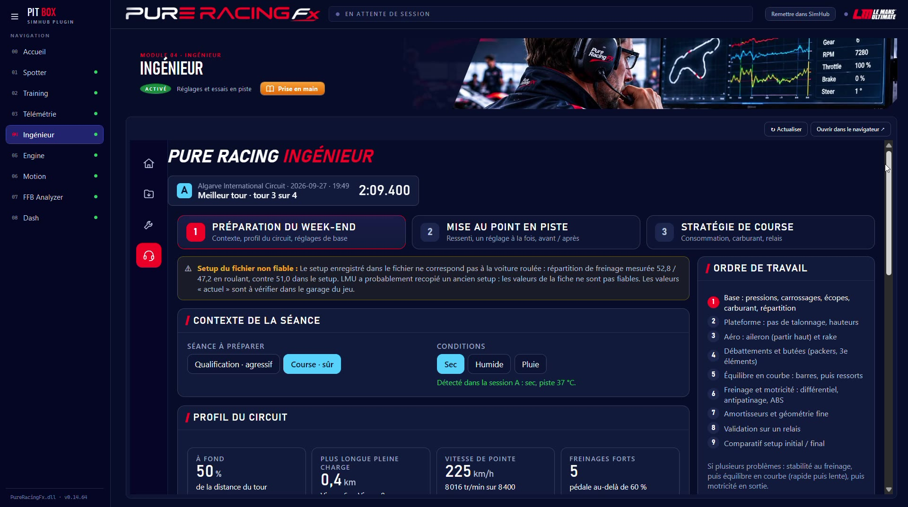
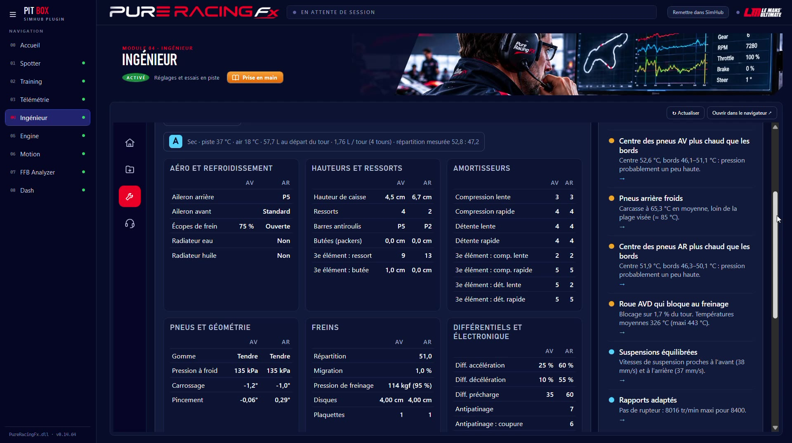
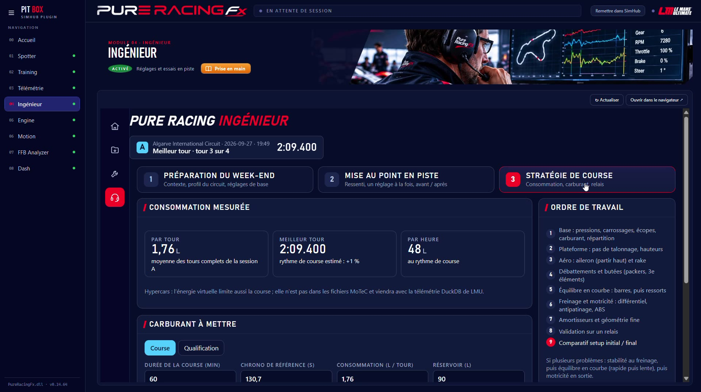

L'Ingénieur part de ta télémétrie et de ce que tu ressens au volant pour poser un diagnostic et proposer des réglages chiffrés. Un changement à la fois : tu essaies, tu compares, tu gardes ou tu annules.
Choisis la séance à préparer (qualification ou course) et les conditions : l'Ingénieur lit le profil du circuit dans ta télémétrie et propose une base.

Tout le setup de la séance en un coup d'œil (aéro, hauteurs et ressorts, amortisseurs, pneus et géométrie, freins, différentiel et électronique), face aux points relevés dans la télémétrie.

La consommation est mesurée sur tes tours, pas estimée : l'Ingénieur en déduit le carburant à mettre pour la course ou la qualification, avec la réserve que tu choisis.

Entre deux relais, l'Ingénieur compare la séance d'avant et celle d'après : tu sais si le changement a payé.
Survirage en entrée, arrière qui décroche, blocage : dis-le à la radio, le repère se pose sur la carte.
Un seul changement chiffré, celui qui répond le mieux à ce que tu ressens et à ce que montre la télémétrie.
Un relais, puis la comparaison avant / après : tu gardes ou tu annules.
| Point | Ce qu'il faut savoir |
|---|---|
| Données | Une séance analysée dans Télémétrie : l'Ingénieur reprend la même séance, rien à recharger. |
| Jeu | Pensé pour Le Mans Ultimate : le setup est lu dans les fichiers de la séance. |
| Conseils | Des pistes de réglage à essayer en piste, pas une vérité absolue : ton ressenti a toujours le dernier mot. |
| Radio | Avec le Spotter, ton ingénieur te parle aussi en piste : encouragements et conseils. |
Côté matériel : des profils moteur pour tes bass shakers.